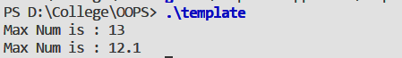

Write a program to explain class template by creating a template for a class named
pair
having two data members of type T which are given by a constructor and a member function get_max() return the greatest of two numbers to main.
A template can be used to create a family of classes or functions. A template can be considered as a kind of macro. When an object of a specific type is defined for actual use, the template definition for that class is substituted with the required data type. Since a template is defined as a parameter that would be replaced by a specified data type at the time of actual use of the class or function, the templates are sometimes called parameterized classes or functions.
template <class T>
class classname{
//
// class member specifications
// with anonymous type T
// wherever appropriate
//
}
#include<iostream>
using namespace std;
template<typename T>
class Pair{
T a;
T b;
public:
Pair(T x,T y=0){
a=x;
b=y;
}
T get_max(){
return a>b?a:b;
}
};
int main(){
Pair <int> p1 (10,13);
cout<< "Max Num is : "<< p1.get_max()<< endl;
Pair <float> p2 (12.1,11.9);
cout<< "Max Num is : " <<p2.get_max()<<endl;
return 0;
}

The class template definition is very similar to an ordinary class definition except the prefix template
<class T>
and the use of type T. This prefix tells the compiler that we are going to declare a template and use T as a type name in the declaration.
Templates are a very powerful mechanism which can simplify many things. Its advantages are: